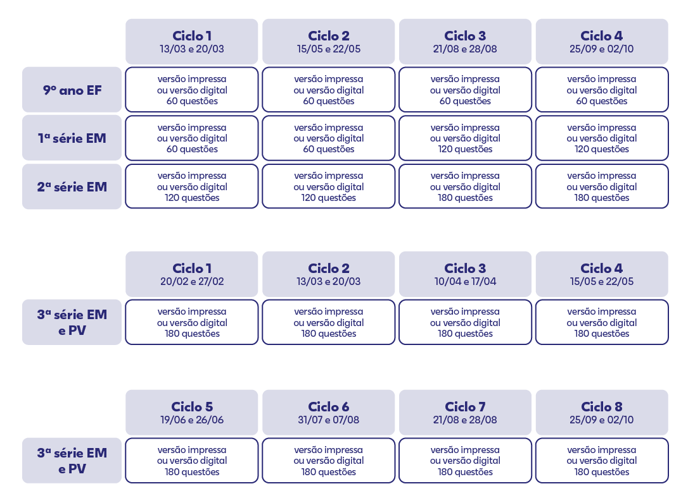

Colégios com 4 Ciclos
Colégios A
Apenas postergar, sem mudar de ciclo.
Colégios com 6 Ciclos
Colégios B
Podem trocar ciclo, exceto base padrão de 4.
Colégios com 8 Ciclos
Colégios C
Apenas postergar, pois já usam todos os ciclos.
⚠️ Atenção
- 4 Ciclos (Colégios A) Podem apenas postergar a aplicação, sem mudar de ciclo.
- 6 Ciclos (Colégios B) Podem trocar o ciclo, desde que não seja a base padrão de 4 (Colégio A).
- 8 Ciclos (Colégios C) Podem apenas postergar a aplicação, pois já utilizam todos os ciclos evolucionais.
1. Calendário Padrão de Ciclos
Datas oficiais Evolucional e colégios participantes — clique nas tags para ver a lista| Ciclo | Data Oficial Evolucional | Colégios |
|---|---|---|
| Ciclo 1 | 20/02 e 27/02 | ✅ TODOS OS COLÉGIOS |
| Ciclo 2 | 13/03 e 20/03 | COLÉGIOS C |
| Ciclo 3 | 10/04 e 17/04 | COLÉGIOS B COLÉGIOS C |
| Ciclo 4 | 15/05 e 22/05 | ✅ TODOS OS COLÉGIOS |
| Ciclo 5 | 19/06 e 26/06 | COLÉGIOS B COLÉGIOS C |
| Ciclo 6 | 31/07 e 07/08 | COLÉGIOS C |
| Ciclo 7 | 21/08 e 28/08 | ✅ TODOS OS COLÉGIOS |
| Ciclo 8 | 25/09 e 02/10 | ✅ TODOS OS COLÉGIOS |
2. O que cada colégio pode fazer
Regras de aplicação, ciclos alocados e observações por colégio| Colégio | Qtd. de Ciclos | Ciclos Alocados | Pode Postergar? | Pode Trocar de Ciclo? | Observação Importante |
|---|---|---|---|---|---|
| CAMPOS, RESENDE, Núcleo Bandeirante Colégios A |
4 Ciclos | 1, 4, 7, 8 | ✅ Sim | ❌ Não | Mantém a base, apenas adia a data. |
| RO, SR, ARAXÁ Colégios B |
6 Ciclos | 1, 3, 4, 5, 7, 8 | ✅ Sim | ✅ Sim | Pode trocar de ciclo, exceto os que são base padrão de 4 (Colégios A). |
| JC e NSV Colégios C |
8 Ciclos | 1, 2, 3, 4, 5, 6, 7, 8 | ✅ Sim | ❌ Não | Já usam todos os ciclos. Só adiam a aplicação. |
3. Observações Gerais
Orientações importantes para aplicação das avaliações1
Consenso entre colégios da mesma cidade: Colégios localizados na mesma cidade devem entrar em consenso das datas de aplicação serem iguais, para evitarem vazamento de gabarito.
2
NÃO é possível aplicar antes da data oficial da Evolucional: Antecipar a aplicação acarreta multas contratuais. Respeite rigorosamente o calendário oficial.
Sobre este documento
Documento de planejamento estratégico específico da parceria com a Evolucional para 2027, desenhado com 3 modelagens de aplicação para a 3ª série do Ensino Médio e informações complementares de aplicações para o 9º ano do EF e para as 1ª e 2ª séries do EM. O cronograma respeita a base padrão de 4 ciclos de avaliação e as particularidades de cada colégio, e as regras de aplicação e a alocação dos ciclos foram definidas para otimizar a aplicação das avaliações. Em caso de dúvidas, entre em contato com o Setor de Escolas - CI.
1. Padrão de Aplicação — Todos os Colégios
Aplicável a TODOS os colégios (exceto os que não possuem Ensino Médio)| Série | Quantidade de Simulados ao Ano |
|---|---|
| 9º Ano EF | 2 simulados ao ano |
| 1ª Série EM | 2 simulados ao ano |
| 2ª Série EM | 3 simulados ao ano |
2. Observações Gerais
Orientações importantes para aplicação das avaliações1
Consenso entre colégios da mesma cidade: Colégios localizados na mesma cidade devem entrar em consenso das datas de aplicação serem iguais, para evitarem vazamento de gabarito.
2
NÃO é possível aplicar antes da data oficial da Evolucional: Antecipar a aplicação acarreta multas contratuais. Respeite rigorosamente o calendário oficial.
3. Cronograma Oficial Evolucional
Padrão de aplicação 9º, 1ª e 2ª série — clique na imagem para ampliar
🔍 Clique na imagem para ampliar
Sobre este documento
Documento de planejamento estratégico específico da parceria com a Evolucional para 2027, desenhado com 3 modelagens de aplicação para a 3ª série do Ensino Médio e informações complementares de aplicações para o 9º ano do EF e para as 1ª e 2ª séries do EM. O cronograma respeita a base padrão de 4 ciclos de avaliação e as particularidades de cada colégio, e as regras de aplicação e a alocação dos ciclos foram definidas para otimizar a aplicação das avaliações. Em caso de dúvidas, entre em contato com o Setor de Escolas - CI.